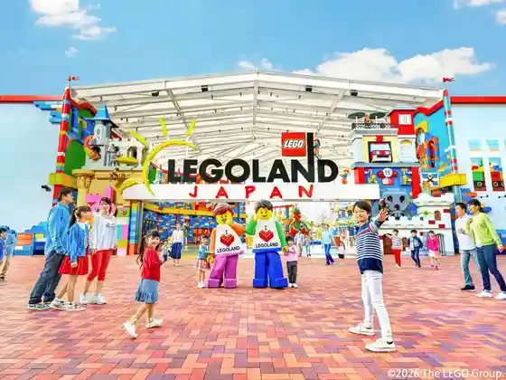
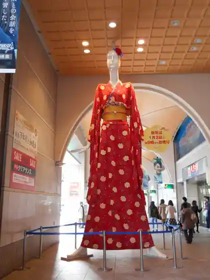
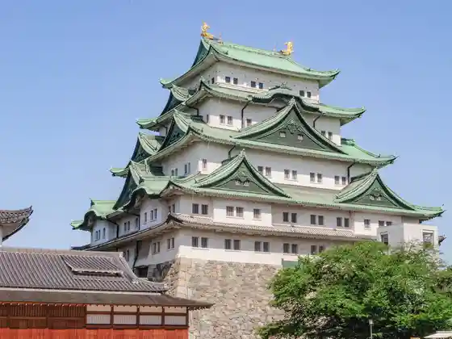
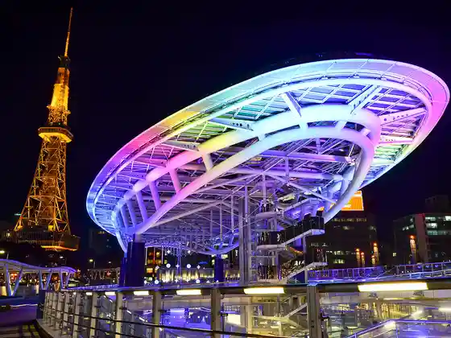

Toyotomi Museum
Nagoya, Aichi · Official / source link
Rego Land ® Japan
Nagoya, Aichi · 0570-05-8605 · Official / source link

Nana Chan Ningyo
Nagoya, Aichi · 052-585-1111 · Official / source link

Nagoya Shiro / Nagoya Shiromoto Maru Goten
Nagoya, Aichi · 052-231-1700 · Official / source link

Oashisu 21
Nagoya, Aichi · 052-962-1011 · Official / source link

Kanayama Sho Town
Nagoya, Aichi · Official / source link
Hobo Sakae Eki Ichiban Deguchi no Ren Machi
Nagoya, Aichi · Official / source link
Bombon Center
Nagoya, Aichi · Official / source link
Eki Nishi Eria
Nagoya, Aichi · Official / source link
Shrine Koji
Nagoya, Aichi · Official / source link
Endon Teramoto Town Shopping Street
Nagoya, Aichi · Official / source link
Ekimae Alley
Nagoya, Aichi · Official / source link
Daimon Alley
Nagoya, Aichi · Official / source link
Imaike Shopping Street
Nagoya, Aichi · Official / source link
Unko Museum NAGOYA
Nagoya, Aichi · Official / source link
IMMERSIVE JOURNEY Nagoya
Nagoya, Aichi · 052-211-8883 · Official / source link
Sekai Aidoru Kyowakoku
Nagoya, Aichi · Official / source link
Betsu Sazae Shrine
Nagoya, Aichi · 052-912-5974 · Official / source link
Hoyuheakara Museum
Nagoya, Aichi · 052-559-4931 · Official / source link
Kame Gaku Hayashi Bansho Tera
Nagoya, Aichi · 052-262-0735 · Official / source link
Nagoya Shiro / Nishi no Maru Mikura Joho Kan
Nagoya, Aichi · 052-231-1700 · Official / source link
Konikami no Rutapuranetariumu Manten NAGOYA
Nagoya, Aichi · 052-526-1780 · Official / source link
Tsurugi no Hoko Kusanagi Kan
Nagoya, Aichi · 052-671-4151 · Official / source link
Meiko Toriton
Nagoya, Aichi · 0120-922-229 · Official / source link
Osu Kimono Rentaru Waso Kajiura
Nagoya, Aichi · 052-253-9477 · Official / source link
Hisaya-odori Park (Hisayaodori Park)
Nagoya, Aichi · 052-265-5575 · Official / source link
Enmusubi Hayashi
Nagoya, Aichi · 052-736-4888 · Official / source link
Tokugawa Art Museum
Nagoya, Aichi · 052-935-6262 · Official / source link
VERMICULAR VILLAGE
Nagoya, Aichi · 052-355-6800 · Official / source link
Nagoya Token Museum (Nagoya Token Warudo)
Nagoya, Aichi · 052-262-6000 · Official / source link
Token Warudo Nagoya Maru no Nai
Nagoya, Aichi · 052-857-0023 · Official / source link
Taikan ! Shidami Kofun Gun Museum
Nagoya, Aichi · 052-739-0520 · Official / source link
Aichiken Library
Nagoya, Aichi · 052-212-2323 · Official / source link
Sugihara Chiune Plaza Senpo Sugihara Memorial
Nagoya, Aichi · 052-954-6747 · Official / source link
Osu Engei Ba
Nagoya, Aichi · 0577-62-9203 · Official / source link
IG Ariina
Nagoya, Aichi · Official / source link
Misono Za
Nagoya, Aichi · 052-222-8222 · Official / source link
Danpu Yama Burial Mound
Nagoya, Aichi · 052-681-5204 · Official / source link
Kin Shachi Alley
Nagoya, Aichi · 052-951-0788 · Official / source link
Hakucho Chobokujo · Mifune Kura Ato
Nagoya, Aichi · 052-683-9421 · Official / source link
Nakagawa Unga Matsushige Komon
Nagoya, Aichi · 052-363-4322 · Official / source link
Paroma Mizuho Supotsu Park
Nagoya, Aichi · 052-836-8200 · Official / source link
I Yatsu Shrine
Nagoya, Aichi · 052-521-8800 · Official / source link
Nagoya So Chinju Wakamiya Hachiman Sha
Nagoya, Aichi · 052-241-0810 · Official / source link
Kyu Toyoda Sasuke Tei
Nagoya, Aichi · 052-222-2318 · Official / source link
Kyu Haruda Tetsujiro Tei
Nagoya, Aichi · 052-222-2318 · Official / source link
(Rekishi to Bunka no Kan) Yo Teru So
Nagoya, Aichi · 052-759-4450 · Official / source link
Kuruzu Nagoya
Nagoya, Aichi · 052-659-6777 · Official / source link
Gurobarugeto
Nagoya, Aichi · Official / source link
Nekkusu Plaza
Nagoya, Aichi · 052-919-3241 · Official / source link
Shonai Ryokuchi Guriin Plaza
Nagoya, Aichi · 052-503-1010 · Official / source link
Washi no Mise Kamizo no
Nagoya, Aichi · 052-524-2636 · Official / source link
Furukawa Art Museum (Bunkan Tamesaburo Memorial Museum)
Nagoya, Aichi · 052-763-1991 · Official / source link
Aichi Nagoya Senso Ni Kansu Ru Museum
Nagoya, Aichi · 052-957-3090 · Official / source link
Buraza Museum
Nagoya, Aichi · 052-824-2227 · Official / source link
Maker's Pier (Meikazupia)
Nagoya, Aichi · 052-304-8722 · Official / source link
Nagoya Yacho Kansatsu Kan
Nagoya, Aichi · 052-381-0160 · Official / source link
Inenaga Bijita Center
Nagoya, Aichi · 052-389-5821 · Official / source link
Fujimae Higata Katsudo Center
Nagoya, Aichi · 052-309-7260 · Official / source link
Okanzakura no Namikimichi
Nagoya, Aichi · Official / source link
Arimatsu Narumi Ko Hall
Nagoya, Aichi · 052-621-0111 · Official / source link
Toyokuni Shrine
Nagoya, Aichi · 052-411-0003 · Official / source link
MTG Nagoya Shiki Gekijo
Nagoya, Aichi · 0570-008-110 · Official / source link
Middo Land Sukuea Sukaipuromunado
Nagoya, Aichi · 052-527-8877 · Official / source link
Kenchu Tera
Nagoya, Aichi · 052-935-3845 · Official / source link
Fuko Tera
Nagoya, Aichi · Official / source link
Todagawakodomo Land
Nagoya, Aichi · 052-304-1500 · Official / source link
Yamazakimazakku Art Museum
Nagoya, Aichi · 052-937-3737 · Official / source link
Obata Ryokuchi
Nagoya, Aichi · 052-791-9492 · Official / source link
Higashiyama So
Nagoya, Aichi · 052-831-2672 · Official / source link
Bunka no Michi to Ki Kan
Nagoya, Aichi · 052-939-2850 · Official / source link
Bunka no Michi Hyakka Mogusa
Nagoya, Aichi · 052-931-1036 · Official / source link
Bunka no Michi Futaba Kan (Kyu Kawakami Sadayakko Tei)
Nagoya, Aichi · 052-936-3836 · Official / source link
Katorikku Nuno Ike Kyokai
Nagoya, Aichi · 052-935-6305 · Official / source link
Nagoya Hosa Bunko
Nagoya, Aichi · 052-935-2173 · Official / source link
Nogyo Bunka Sono Toda Kawa Ryokuchi
Nagoya, Aichi · 052-302-5321 · Official / source link
Nagoya Nogyo Center dela Famu
Nagoya, Aichi · 052-801-5221 · Official / source link
Nagoya Azumaya Yama Furutsu Park
Nagoya, Aichi · 052-736-3344 · Official / source link
Nagoya Minato Potobiru
Nagoya, Aichi · 052-652-1111 · Official / source link
Megrass Garden Nagoya (Megurasu Garden Nagoya) Kyu : Nagoya Minato Wairudofurawa Garden Burubonetto
Nagoya, Aichi · 052-951-8211 · Official / source link
Nagoya Minato Garden Fu Atama Nagoya Kaiyo Museum (Potobiru) Nankyoku Kansoku Fune Fuji
Nagoya, Aichi · 052-652-1111 · Official / source link
Yagoto Yama Kosho Tera
Nagoya, Aichi · 052-832-2801 · Official / source link
Fujimae Higata
Nagoya, Aichi · 052-389-5821 · Official / source link
Odaka Ryokuchi
Nagoya, Aichi · 052-622-2281 · Official / source link
Hirokazu Art Museum
Nagoya, Aichi · 052-413-6777 · Official / source link
Josen Tera (Hidekichi Ko Ubuyu no Ido)
Nagoya, Aichi · 052-412-3467 · Official / source link
Shiken Michi no Streetscape
Nagoya, Aichi · Official / source link
Mitsubishi UFJ Ginko Kahei Ukiyoe Museum
Nagoya, Aichi · 052-300-8686 · Official / source link
Shichiri no Watashi (Miya no Watashi Park)
Nagoya, Aichi · 052-881-7017 · Official / source link
Hisaya Odori Teien Furarie
Nagoya, Aichi · 052-243-0511 · Official / source link
Hisaya Odori Park
Nagoya, Aichi · Official / source link
Endon Tera Shopping Street
Nagoya, Aichi · 052-551-6800 · Official / source link
Aichi Geijutsu Bunka Center
Nagoya, Aichi · 052-971-5511 · Official / source link
Meijo Park Meijo Koen Furawa Plaza
Nagoya, Aichi · 052-913-0087 · Official / source link
Tsurumai Park
Nagoya, Aichi · 052-733-8340 · Official / source link
Denki no Science Museum
Nagoya, Aichi · 052-201-1026 · Official / source link
(Tokaido) Miyajuku
Nagoya, Aichi · Official / source link
Okehazama Kosenjo Park
Nagoya, Aichi · 052-755-3593 · Official / source link
Nagoya Great Buddha / Momo Gan Tera
Nagoya, Aichi · 052-781-1427 · Official / source link
Osu Shopping Street
Nagoya, Aichi · 052-261-2287 · Official / source link
Nagoya Hidekichi Kiyomasa Memorial Museum
Nagoya, Aichi · 052-411-0035 · Official / source link
Ryusen Tera (Nio Mon)
Nagoya, Aichi · 052-794-3647 · Official / source link
Arako Kan'onji
Nagoya, Aichi · 052-361-1778 · Official / source link
Aichiken Cho
Nagoya, Aichi · 052-961-2111 · Official / source link
Kasadera Kannon (Kasa Fuku Tera)
Nagoya, Aichi · 052-821-1367 · Official / source link
Nagoya Shisei Museum (Kyu Nagoya Koto Saibansho)
Nagoya, Aichi · 052-953-0051 · Official / source link
Yagihashi Chuo Market
Nagoya, Aichi · 052-581-8111 · Official / source link
Nagoya Nogakudo
Nagoya, Aichi · 052-231-0088 · Official / source link
Nagoya Kokusai Tenjijo (Potomesse Nagoya)
Nagoya, Aichi · 052-398-1771 · Official / source link
Nagoya Kokusaikaigijo (Hakucho Senchurii Plaza)
Nagoya, Aichi · 052-683-7711 · Official / source link
Banterindomu Nagoya
Nagoya, Aichi · 052-719-2121 · Official / source link
Nagoya Art Museum
Nagoya, Aichi · 052-212-0001 · Official / source link
Nagoya Museum
Nagoya, Aichi · 052-853-2655 · Official / source link
Nagoya Minato Shiitorein Land
Nagoya, Aichi · 052-661-1520 · Official / source link
Chubudenryoku MIRAI TOWER (Kyu Nagoya Terebi to)
Nagoya, Aichi · 052-971-8546 · Official / source link
Nittai Tera (Kakuozan)
Nagoya, Aichi · 052-751-2121 · Official / source link
Aichiken Art Museum
Nagoya, Aichi · 052-971-5511 · Official / source link
Nagoya Guranpasu
Nagoya, Aichi · 0565-79-8880 · Official / source link
Arimatsu Narumi no Furui Streetscape
Nagoya, Aichi · 052-621-0111 · Official / source link
FUJI Nagoya Science Museum
Nagoya, Aichi · 052-201-4486 · Official / source link
Nagoya Minato Aquarium
Nagoya, Aichi · 052-654-7080 · Official / source link
no Ritake Forest
Nagoya, Aichi · Official / source link
Toyota Sangyo Gijutsu Memorial Museum
Nagoya, Aichi · 052-551-6115 · Official / source link
Atsuta Shrine
Nagoya, Aichi · 052-671-4151 · Official / source link
Tokugawa Sono
Nagoya, Aichi · 052-935-8988 · Official / source link
Higashiyama Do Botanical Garden Higashiyama Sukaitawa
Nagoya, Aichi · 052-782-2111 · Official / source link
Hakucho Garden
Nagoya, Aichi · 052-681-8928 · Official / source link
Osu Kannon (Hosho In)
Nagoya, Aichi · 052-231-6525 · Official / source link
Rinia Tetsudo Kan
Nagoya, Aichi · 052-389-6100 · Official / source link